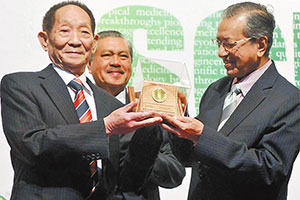

袁隆平
袁隆平（1930年9月-），江西省九江市德安县人，毕业于西南农学院（现西南大学），中国杂交水稻育种专家，“共和国勋章”获得者，中国研究与发展杂交水稻的开创者，被誉为“世界杂交水稻之父”。
1995年当选中国工程院院士，2000年获得国家最高科学技术奖，2006年当选美国国家科学院外籍院士。袁隆平先后成功研发出“三系法”杂交水稻、“两系法”杂交水稻、超级杂交稻一期、二期，与此同时，提出并实施“种三产四丰产工程”。2018年被党中央、国务院授予改革先锋称号。

主要成就
科研成就

袁隆平获颁“马哈蒂尔科学奖”
1964年开始研究杂交水稻，1966年在IRRI菲律宾国际水稻研究所，培育出奇迹稻（IR8）袁隆平的杂交水稻研究。1974年育成第一个杂交水稻强优组合南优2号。1975年研制成功杂交水稻制种技术，从而为大面积推广杂交水稻奠定了基础。1985年提出杂交水稻育种的战略设想，为杂交水稻的进一步发展指明了方向。
1986年袁隆平提出了杂交水稻的育种战略，将杂交水稻的育种从选育方法上分为三系法、两系法和一系法三个战略发展阶段，即育种程序朝着由繁至简而效率越来越高的方向发展；从杂种优势水平的利用上分为品种间、亚种间和远缘杂种优势的利用三个战略发展阶段，即优势利用朝着越来越强的方向发展。根据这一设想，杂交水稻每进入一个新阶段都是一次新突破，都将把水稻产量推向一个更高的水平。这项战略构想的提出，为中国已取得三系法杂交水稻研究、开发成功后开展杂交水稻新探索指明了方向。
教学成果
被联合国粮农组织聘请为国际上发展杂交水稻的首席顾问。他30次赴国际水稻所开展合作研究和技术交流，10多次赴印度、越南、缅甸、菲律宾、孟加拉等国指导发展杂交水稻。20世纪80年代以来，先后在境内外举办了50余期杂交水稻国际培训班，培训了来自40多个发展中国家约2000名政府官员和农技专家。 学生有邓华凤研究员，黄培劲。
1980年5月，袁隆平应美国邀请赴美进行杂交稻制种技术指导。9月，中国农业科学院和国际水稻研究所共同在湖南省农业科学院举办杂交稻技术国际培训班，袁隆平作为主讲人给来自10多个国家的专家讲授杂交水稻方面的主要课程。翌年9月，又连续举办第二期。10月，赴菲律宾国际水稻研究所进行技术指导与合作研究。2003年，袁隆平指导博士生开展远缘物种基因组DNA导入水稻的研究，将一批外源DNA转基因进入水稻。